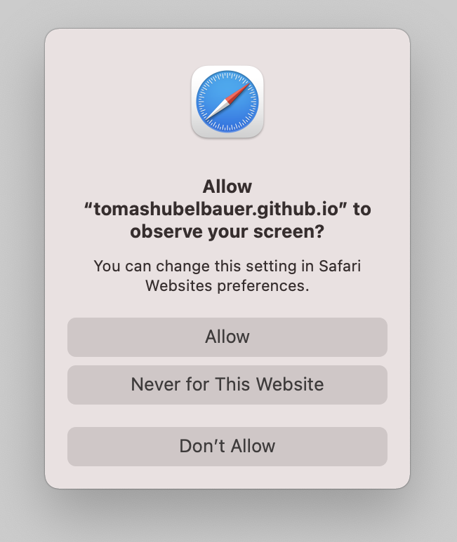

This page uses the
getDisplayMedia API
to allow the calling page to obtain a screenshot of itself.
Source code and documentation on GitHub

Click the button.
Expand the Window Or Screen selector

Select the Selfie tab or Entire Screen
The tab content will get cropped out automatically.
Press the Allow button

The screenshot will appear.
Right-click on it and select Save Image As… to download it.


Click the button.
Safari only provides a capture of the entire screen.
Press the Allow button
The tab content will get cropped out automatically.
The screenshot will appear.
Right-click on it and select Save Image As… to download it.


Click the button.
Select Entire Screen item or the Selfie tab Chrome Tabs tab


Press the Share button
The tab content will get cropped out automatically.
The screenshot will appear.
Right-click on it and select Save Image As… to download it.